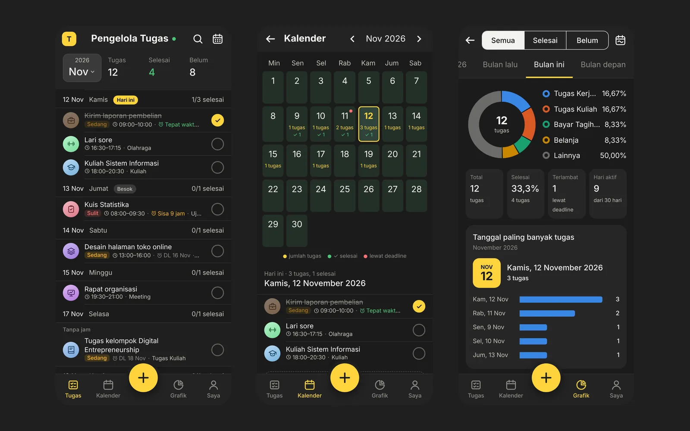

Pengelola Tugas
Aplikasi jadwal dan checklist tugas, dipakai sungguhan oleh teman-teman saya
Mencatat tugas dan jadwal harian, lengkap dengan kalender, hitung mundur deadline, dan grafik tugas yang sudah selesai. Bisa dipasang di HP seperti aplikasi biasa dan tetap bisa dipakai saat sinyal hilang. Semua datanya tersimpan rapi di Google Spreadsheet.
Coba aplikasinyaTerbuka dengan contoh tugas, tidak perlu daftar.
- Cocok untuk
- Usaha yang ingin staf mencatat pekerjaannya sendiri, sementara pemilik bisa melihat semuanya di satu Google Spreadsheet.
- Fitur
- Kalender, deadline, centang selesai, grafik, bisa dipakai tanpa internet, bisa dipasang di HP.